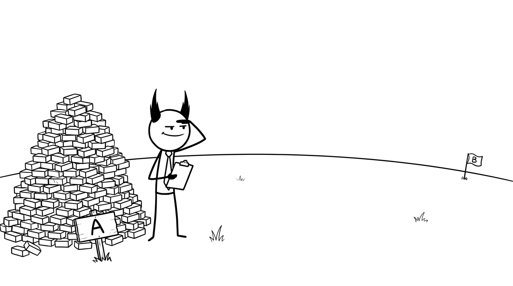

<section id="analogy" data-transition="fade" style="display:flex; align-items:center; justify-content:center; padding:0; background:#fcfcfa">

<p style="position:absolute;left:0;bottom:10px;width:1920px;margin:0;text-align:center;font-family:'Patrick Hand', 'Trebuchet MS', sans-serif;font-size:22px;color:#8a8f98">Copyright Dobromir Montauk 2026</p>
<aside><b>A to B.</b> Notice what nobody told you: how big B is, how far away, or what’s in between. Every one of those unknowns is going to bite us later. Hold that thought.</aside>
</section>
